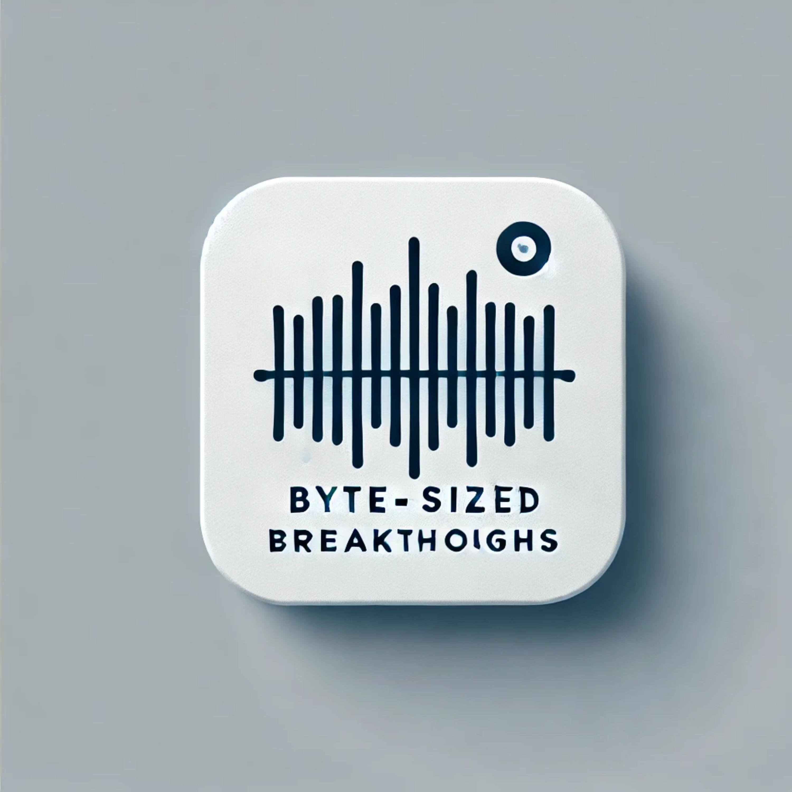

RL^2: Fast Reinforcement Learning via Slow Reinforcement Learning
Aug 5, 2024

I love Arxiv, but often find myself with pockets of time when I can’t sit down and read. This podcast bridges that gap, offering bite-sized explorations of individual papers.
A few things to note:
This podcast aims to spark curiosity and make cutting-edge research more accessible. It’s perfect for those moments when you want to learn but can’t dive into a full paper.
Enjoy the exploration of ideas, and let it fuel your interest in further reading!
Join them as they break down complex research into byte-sized breakthroughs!